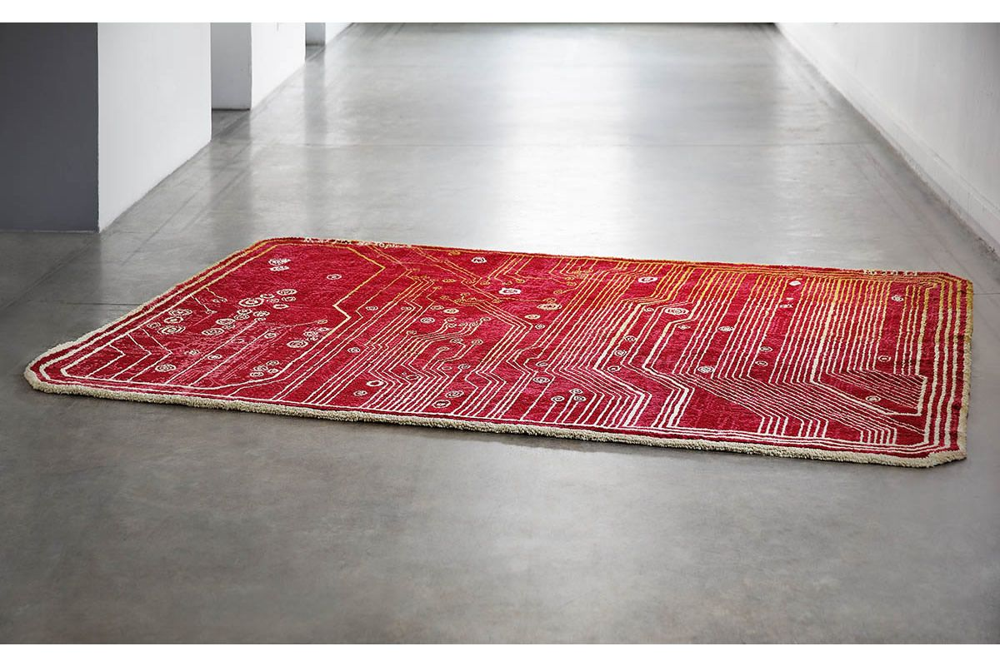
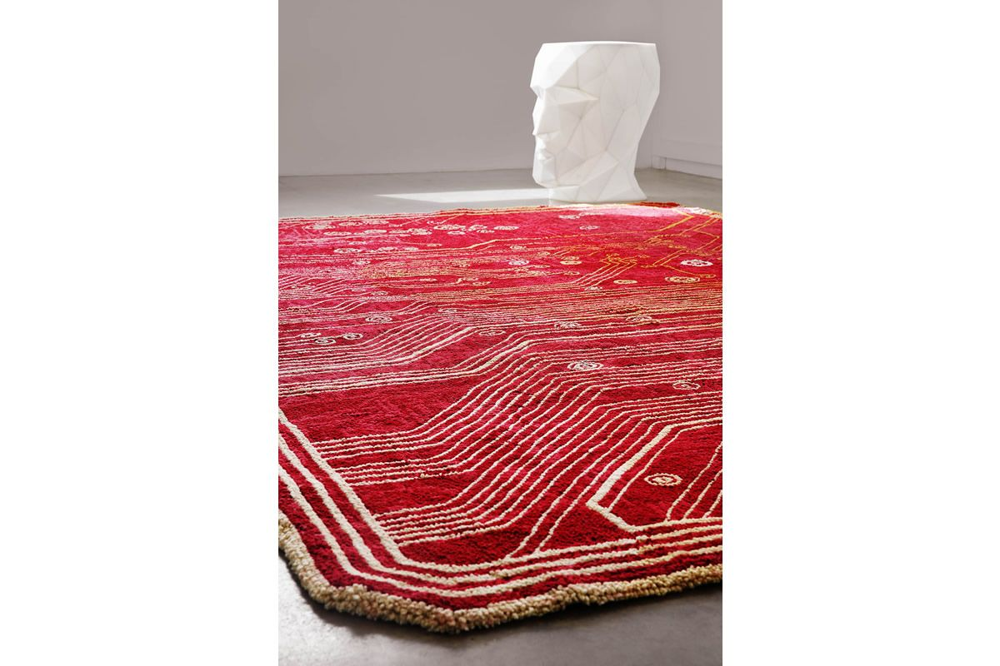

|
2015 |
Alfombra ElectricLa Real Fábrica de Tapices, fundada en 1721 por Felipe V, se ha caracterizado por transmitir su saber hacer y por la creación de obras de arte capaces de pervivir el paso del tiempo durante estos siglos. El encargo de una alfombra con un diseño contemporáneo ha sido un gran reto que ha dado como resultado una reinterpretación de los diseños geométricos y ornamentales que durante siglos han marcado los tapices reales. Tanto el diseño, inspirado en una placa base, como la elección de colores forman un patrón que se puede repetir formando alfombras de distintos tamaños. Realizada a mano, mantiene los valores de elegancia y calidad típicas del sello de la Real Fábrica. Gracias al diseño contemporáneo y la paleta de colores tan típica en estas alfombras, unido a la certificación de calidad que la Real Fábrica le aporta, esta alfombra es sin duda es valor seguro a la hora de invertir en una pieza de arte única y creada en exclusiva bajo pedido. |

 |